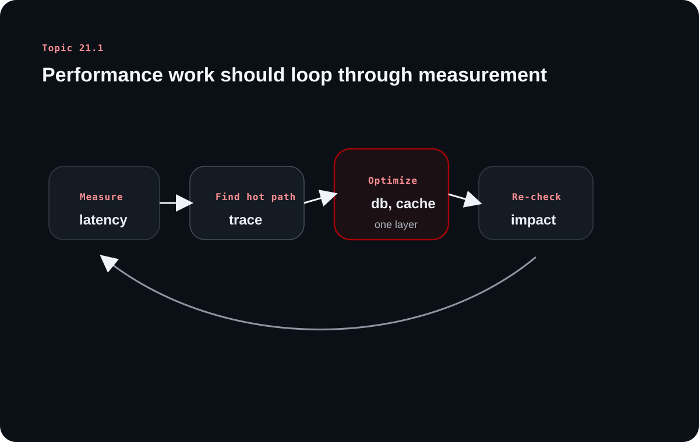

Backend Scaling and Performance Engineering - Part 1
Topic 21.1 builds the measurement layer of performance engineering. Instead of starting with tuning tricks, it starts with latency, throughput, utilization, and bottleneck detection so optimization happens in the right order.
The source's main discipline is measurement before intervention. Fast systems are usually the result of knowing where the bottleneck actually lives, not of guessing which component looks expensive from a distance.
Chapter 1
Performance starts with latency, but latency has to be read as a distribution
The source opens by defining the metrics that shape user experience most directly.
Latency is total response time, and it varies by request
Latency is the end-to-end time from a user action to the delivered result. The source stresses that it includes network hops, server processing, database work, external calls, and even rendering-related delay that contributes to the user's perceived wait.
It also stresses that latency is not a single stable number. Cache behavior, concurrent load, and network conditions make each request slightly different.
Percentiles matter because averages hide the tail
The source emphasizes P50, P90, P95, and P99 because the slowest portion of traffic often contains the most complex or valuable workflows. Tail latency is where many real business problems show up.
That is why engineers do not stop at averages. A healthy median does not help much if important user journeys are still painfully slow at the tail.
Percentile
What it means
Why teams care
P50
Half of requests are faster than this
Median experience
P90
Most requests are faster than this
Reveals broader slow segments
P95/P99
Tail requests are slower than this
Shows risk in critical paths
Chapter 2
Throughput and utilization explain why fast systems suddenly become slow near capacity
The source then connects request volume to system behavior under load.
Throughput measures how much work the system completes per unit time
Throughput tells us how many requests the system can handle in a second or minute. On its own, that number is not enough, because a system can handle more work only until the internal queues and resources begin to strain.
This is why throughput and latency have to be read together rather than separately.
High utilization leaves too little headroom for bursty traffic
The source describes how latency often rises gradually and then sharply as utilization approaches full capacity. At that point, queues form, contention grows, and user-facing slowness accelerates quickly.
That is why sensible systems often operate below full utilization. Spare headroom is not waste; it is protection against burstiness and unpredictable spikes.
Chapter 3
Bottlenecks should be measured, not guessed
The source is firm on this point: performance work without measurement often solves the wrong problem.
Profiling explains CPU-bound hotspots
Profilers and flame graphs show which functions or code paths consume significant CPU time. This is the right tool when the backend is spending real compute rather than waiting on external systems.
That makes profiling especially valuable when expensive business logic, parsing, or serialization is driving the slowdown.
Distributed tracing exposes IO-bound bottlenecks across request paths
The source pairs profiling with tracing because many backend delays come from databases, caches, and external services rather than raw CPU. Tracing reveals where the request waited, not only where it computed.
This is the bridge between performance engineering and observability: once teams can see the slow segment, optimization becomes much less speculative.
Learning diagram

Performance engineering works best as a loop: measure, find the bottleneck, change one layer deliberately, and then validate the result instead of guessing.
Chapter 4
Databases and caches dominate many real backend performance conversations
The source then gets practical by naming common sources of slowdown.
N+1 queries, missing indexes, and connection overhead are common database traps
The source highlights N+1 query behavior, indexing strategy, EXPLAIN ANALYZE, and connection pooling because databases are frequent bottlenecks in otherwise well-structured systems. Many slow endpoints are not algorithmically complex; they are simply chatty or poorly indexed.
This is why database optimization usually starts with access pattern review rather than immediate infrastructure scaling.
Caching helps, but only when invalidation and placement are thought through
Caching can reduce latency and database pressure dramatically, but the source is careful to call out invalidation difficulty. Local caches are fast but can become inconsistent across instances, while distributed caches centralize state but add their own network cost.
Tiered caching and pattern choices such as cache-aside or write-through only work well when the team understands what should stay fresh and what can be reused safely.
Chapter 5
Vertical and horizontal scaling solve different problems and create different limits
The last section of part 1 positions scaling choices inside the broader performance picture.
Scaling up is simpler; scaling out is more powerful but more complex
Vertical scaling means making one machine stronger. It is easy to understand and often easy to apply, but it hits hardware ceilings, centralizes failure risk, and does not improve geographic proximity for users.
Horizontal scaling adds instances and unlocks capacity plus redundancy, but it introduces distributed-system concerns such as coordination, load balancing, and state distribution.
Direction
Strength
Main limitation
Vertical
Simple and fast to adopt
Hardware ceiling and single-node risk
Horizontal
Capacity and redundancy
Coordination and state complexity
Overall takeaway
What to remember
Performance engineering starts with percentiles, throughput, and utilization, but it succeeds only when the team measures real bottlenecks before changing databases, caches, or scaling topology. Measurement first is the durable rule.